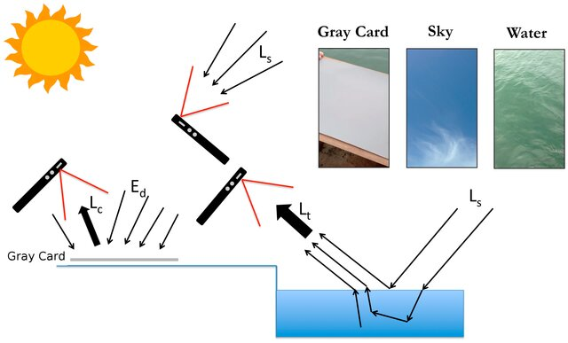
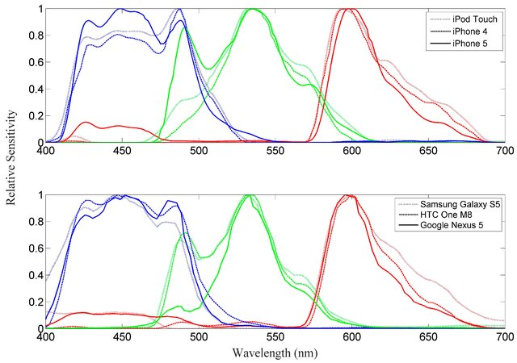
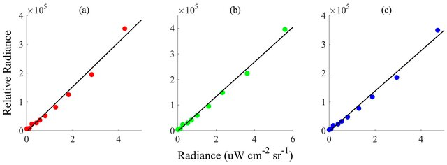
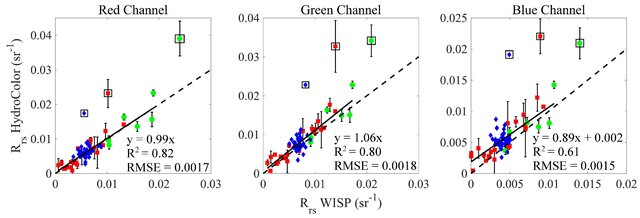
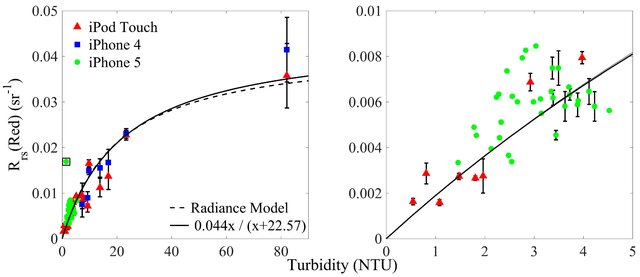
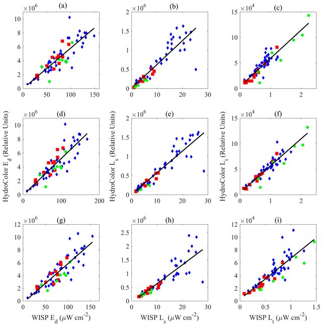
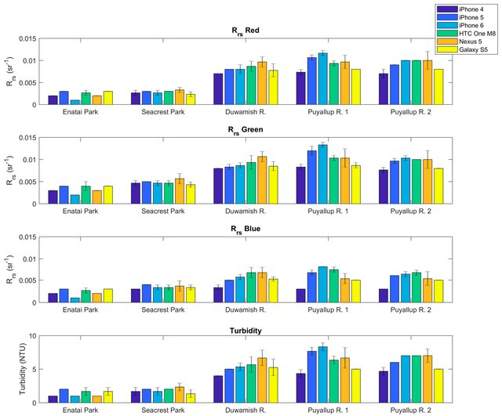
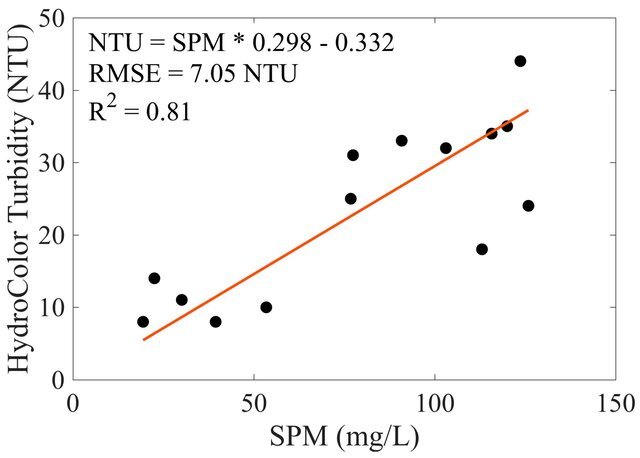

O que é HydroColor?
HydroColor é um aplicativo móvel que transforma a câmera do smartphone em um fotômetro de três bandas (RGB). Com a coleta padronizada de imagens (cartão cinza 18%, céu e água) o sistema estima a refletância de sensoriamento remoto acima da água (Rrs) e parâmetros derivados, como turbidez e SPM.
Por que usar HydroColor?
- Baixo custo e acessibilidade para ciência cidadã e monitoramento.
- Compatibilidade com medidas remotas de satélite (comparabilidade).
- Exportação de dados com metadados completos (GPS, ângulos, exposição).
Limitações e boas práticas
HydroColor oferece uma solução prática, porém sujeito a limitações: variabilidade entre modelos de câmeras, efeitos de saturação e influência do ângulo solar. Para obter resultados reutilizáveis, adote protocolos padronizados, registre metadados completos e realize calibrações locais sempre que possível.
Dica: colete pelo menos 3 replicatas por ponto e anote condições ambientais (vento, nuvens, presença de espuma).
Fluxo de trabalho
- Preparar local e equipamento (cartão 18%, calibrador, registrar condições).
- Capturar imagem do cartão cinza, do céu e da água seguindo orientação do app.
- Processamento no app: normalização RGB pela exposição e pelo cartão, correção por reflexão do céu, cálculo de Rrs.
- Exportar arquivo .txt com metadados e valores para análise e validação.
Teoria: o que é Reflectância (Rrs)?
Reflectância de sensoriamento remoto acima da superfície, Rrs(λ), é a razão entre a radiância que emerge da água (Lw(λ)) e a irradiância descendente (Ed(λ)) em um comprimento de onda específico. Em termos práticos:
Intuitivamente, Rrs indica a fração da energia incidente que, após passagem pela coluna d'água e interações ópticas (absorção e espalhamento), retorna ao sensor. É a variável central para inferir propriedades da água, como concentração de sólidos em suspensão (SPM), turbidez e conteúdo de fitoplâncton.
Elementos físicos e sua influência
- Absorção: moléculas como CDOM e pigmentos fitoplanctônicos removem luz em comprimentos de onda específicos, reduzindo Rrs nas bandas onde absorvem.
- Espalhamento: partículas inorgânicas e SPM desviam luz, aumentando Rrs; bandas mais longas (vermelho) costumam ser mais sensíveis a partículas grandes.
- Superfície: brilho especular (glint) do céu pode contaminar Lw; por isso são capturadas imagens do céu para estimar e subtrair essa contribuição.
Por que medir Rrs com smartphone?
Aplicativos como o HydroColor usam canais RGB das câmeras como bandas amplas. Apesar da menor resolução espectral e da sobreposição entre canais, medidas padronizadas (cartão 18%, exposição controlada, foto do céu) permitem estimativas robustas e comparáveis em séries temporais e validação com sensores de referência.
Exemplos práticos
- Em águas costeiras turvas, Rrs_red aumenta com a concentração de SPM — útil para mapas rápidos de turbidez.
- Águas com alta concentração de fitoplâncton apresentam redução relativa em Rrs_green devido à absorção por clorofila.
Nota: a interpretação quantitativa exige calibração local e correções radiométricas; use replicatas e métricas estatísticas (RMSE, bias) ao comparar com instrumentos de referência.
Diagrama explicativo

Nota: HydroColor usa os canais RGB da câmera como bandas largas que correlacionam com respostas espectrais tradicionais.
Figuras do artigo (exemplos)
As figuras abaixo são extraídas do artigo de referência e ilustram a sensibilidade espectral das câmeras, a resposta do sensor e a relação entre Rrs e turbidez.


Protocolo de campo detalhado
Itens essenciais
- Cartão cinza fotográfico 18% (laminado, plano).
- Smartphone com bateria carregada e espaço disponível.
- Instrumentos de referência para validação (radiômetro, turbidímetro).
- Registro de condições (vento, ondas, cobertura de nuvens).
Passo a passo
- Posicione-se de forma estável à beira da água; evitar sombras sobre o cartão e sobre a área de medição.
- Abra o HydroColor e siga a orientação visual para alinhar o cartão, o céu e o quadro de água (ângulos zênite/azimute são mostrados).
- Tire a foto do cartão 18% (para calibrar iluminação do dia).
- Tire a foto do céu na direção indicada pelo app para estimar contribuição de brilho de superfície.
- Tire a foto da água num ponto homogêneo próximo ao observador; evite espuma e reflexos diretos.
- Repita a sequência (mínimo 3 replicatas) para reduzir variabilidade.
Checklist rápido
- Cartão limpo e plano? ✓
- Exposição automática fixa ou consistente? ✓
- Fotos do céu sem obstruções (não apontar diretamente para o sol)? ✓
- Replicatas coletadas e metadados registrados? ✓
Dicas práticas
- Preferir horas centrais do dia com céu claro para reduzir incertezas.
- Evitar amostras durante mar agitado ou vento forte.
- Treinar equipe para posicionamento consistente do cartão e do sensor.
Processamento e cálculo
Normalização e calibração
O app normaliza os valores dos pixels RGB pela exposição e calibra a iluminação usando o cartão cinza. Em seguida, subtrai a contribuição do céu (estimada a partir da foto do céu) para isolar a radiância emitida pela água.
Dados exportados
O arquivo exportado contém: identificador, data/hora UTC, latitude/longitude, ângulos solares, rumo e inclinação do aparelho, exposição, valores RGB normalizados, Rrs por banda e estimativa de turbidez.
Formato e inspeção rápida
O arquivo exportado geralmente é um arquivo texto/tabulado (.txt ou .csv). Verifique o cabeçalho para confirmar colunas: ID, timestamp, lat, lon, Rrs_R, Rrs_G, Rrs_B, turbidez_estimada, etc. Console/planilha rápida ajudam a identificar outliers e imagens saturadas.
Equações simplificadas
Onde parâmetros empíricos (a,b) são derivados da calibração com turbidímetro.
Validação e desempenho
Leeuw & Boss (2018) compararam HydroColor com radiômetros e turbidímetros comerciais mostrando:
- Erro médio em Rrs ~ 26% (precisão frente a radiômetros).
- Erro médio em turbidez ~ 24% frente a turbidímetros portáteis.
Essas incertezas dependem fortemente de condições de campo e proficiência do operador. Em condições ótimas (meio-dia, céu claro, operador treinado) o erro tende a diminuir.
Métricas recomendadas
- RMSE — erro quadrático médio para avaliar magnitude do desvio.
- Bias — tendência sistemática entre métodos.
- R² — força da correlação entre HydroColor e referência.
Ao validar, plote scatter plots (linha 1:1), resíduos e boxplots por faixa de turbidez para entender padrões de erro e condições onde o método falha.
Recomendações para análise
- Calibrar empiricamente as relações Rrs → NTU para a região/condições locais.
- Analisar replicatas e excluir medições com evidências de erro (ondas, reflexos).
- Usar métricas estatísticas (RMSE, bias, coeficiente de correlação) para comparar com instrumentos de referência.
Figuras de validação (artigo)
As imagens abaixo mostram comparações entre HydroColor e instrumentos de referência e a relação empírica entre Rrs (canal vermelho) e turbidez.





Recursos e referências
Artigo-base: Leeuw, T.; Boss, E. (2018). The HydroColor App: Above Water Measurements of Remote Sensing Reflectance and Turbidity Using a Smartphone Camera. Sensors, 18, 256.
Download do app (Android): HydroColor na Play Store
Apresentação de referência do projeto de mestrado: Macrofitas — Projeto de Mestrado
Arquivos do artigo (texto e PDFs)
Texto completo salvo em: hydrocolor_article_full.txt
Artigo adicional de calibração/validação (PDF): Calibration and validation of the HydroColor and Citclops.pdf
Organização de assets e deploy
Coloque imagens e recursos em ./assets/img/ e referências relativas no HTML (já atualizadas nesta página). Para publicar no GitHub Pages, mova este arquivo para `index.html` na branch `gh-pages` ou na raiz do repositório e confirme que os caminhos relativos apontam para a pasta `assets`.
Exemplos de uso
- Monitoramento costeiro de turbidez após eventos de chuva.
- Campanhas de ciência cidadã para mapeamento de SPM.
- Validação de produtos de sensoriamento remoto por satélite.
Glossário
Termos e definições usados na apresentação HydroColor.
Rrs (Reflectance, remote sensing)
Reflectância remota acima da superfície da água; definida como Rrs = Lw / Ed, onde Lw é a radiância emergente e Ed a irradiância descendente.
Lw (Radiância da água)
Radiância emergente medida acima da superfície da água; contribuição direta para o cálculo de Rrs.
Ed (Irradiância descendente)
Fluxo de radiação incidente por unidade de área proveniente do céu que ilumina a superfície da água.
Ls / Lt (Radiância do céu / Radiância total)
Ls é a radiância do céu; Lt é a radiância total medida incluindo superfície e céu.
SPM (Suspended Particulate Matter)
Material particulado em suspensão, frequentemente expresso em mg/L ou g/m³; está relacionado à turbidez.
Turbidez (NTU)
Medida óptica da turvação da água; NTU (Nephelometric Turbidity Units) é a unidade mais comum.
Calibração
Procedimentos para ajustar leituras da câmera usando referências (ex.: cartão 18%) para remover viés de iluminação e padronizar medições.
Saturação
Estado em que o sensor atinge seu limite superior de registro, tornando as leituras inválidas para análise radiométrica.
Cross-talk espectral
Sobreposição das bandas R, G e B em sensores de câmera, que causa mistura espectral entre canais e limita resolução espectral.
RMSE (Root Mean Square Error)
Métrica de erro usada em validação para quantificar diferenças entre séries de medições (ex.: HydroColor vs radiômetro).
Bias
Desvio sistemático entre duas séries de medições; diferença média entre estimativas e valores de referência.
Metadata
Informações associadas às imagens (GPS, data/hora, ângulos, exposição) essenciais para reprodutibilidade e análise.
Reflectância (albedo local)
Frações da luz incidente refletida pela superfície; em águas, a reflectância espectral indica constituintes opticamente ativos.
Radiância
Quantidade de luz que chega ao sensor por unidade de área e ângulo sólido; tipicamente medida em W·sr⁻¹·m⁻²·nm⁻¹.
Unidades e exemplos
Exemplos típicos: concentração de SPM em mg·L⁻¹, turbidez em NTU, radiância em W·sr⁻¹·m⁻²·nm⁻¹. Incluir unidades facilita comparação entre métodos.
IOPs / AOPs
IOPs (Inherent Optical Properties) são propriedades do meio (absorção, espalhamento) independentes da iluminação; AOPs (Apparent Optical Properties) dependem da iluminação e geometria (ex.: reflectância).
Coeficiente de atenuação
Coeficiente de atenuação vertical (Kd) descreve a perda de irradiância com profundidade; unidades típicas: m⁻¹.
Constituintes: clorofila-a, CDOM, sedimentos
Principais constituintes opticamente ativos: clorofila-a (biomassa fitoplanctônica), CDOM (dissolved organic matter) e sólidos em suspensão (sedimentos).
Protocolos / metodologia
Boas práticas: registrar metadata completa, usar cartão de referência (18%) para calibração de exposição, evitar áreas saturadas e anotar condições de iluminação/ângulos.
Notação e símbolos
Use notação espectral explícita, por ex. Rrs(λ) ou Lw(λ), para indicar dependência em comprimento de onda.
Referências rápidas
Sugestões para leitura: Mobley (1994) sobre óptica da água; Lee et al. (2002) para algoritmos de reflectância; artigos do método HydroColor para protocolos práticos.